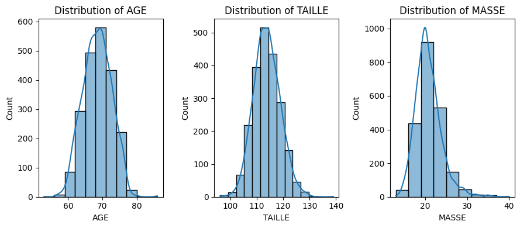
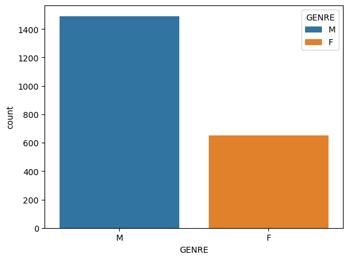

Exploratory Data Analysis & Unsuperivsed Learning Course: PHAUK Sokkey, PhD TP: HAS Sothea, PhD
Objective: Preprocessing is important in data related tasks. In this TP, you will explore different challanges you may encounted during when performing data preprocessing. We will discuss reasonable solution to these challanges.
We will begin with missing data which are very common within real-world datasets. One common question about missing values is “Should we remove them”? We will delve into possible proper solution to this problem.
We will work with Enfants dataset available here: Enfants dataset.
a. Import this data and name it data.
import warningswarnings.filterwarnings('ignore')import pandas as pdimport numpy as npdata = pd.read_table("D:/Sothea_PC/Teaching_ITC/EDA\data/Enfants.txt", sep="\t")data.head(5)
GENRE
AGE
TAILLE
MASSE
0
F
68
0
20
1
M
74
116
18
2
M
69
120
23
3
M
72
121
25
4
M
73
114
17
b. Compute statistical values and visualize the distribution of each variable.
import seaborn as snsimport matplotlib.pyplot as pltnames = data.columns_, ax = plt.subplots(1,3, figsize=(9, 4))i =0for var in names:if var !="GENRE": sns.histplot(data, x=var, kde=True, ax=ax[i], binwidth=3) ax[i].set_title(f"Distribution of {var}") i +=1plt.tight_layout()
c. Did you find anything strange in the previous graphs?
Your response: It appears that there are children who have height or weight equal to \(0\). This seems to be missing data.
d. Create new data called data_NoNA by replacing all missing values with np.nan. Remove all the rows containing missing values. - Repeat point (b) on data_NoNA data. - Compare the distribution of these variables before and after removing missing values.
_, ax = plt.subplots(1,3, figsize=(9, 4))i =0for var in names:if var !="GENRE": sns.histplot(data_NoNA, x=var, kde=True, ax=ax[i], binwidth=3) ax[i].set_title(f"Distribution of {var}") i +=1plt.tight_layout()

# Genresns.countplot(data=data_NoNA, x ="GENRE", hue="GENRE", legend=True)

What do you observe?
The distribution of AGE remains similar to the original data even after removing the missing values. On the other hand, the distribution of GENRE changes after removing missing values.
What’s the mechanism/type of these missing values?
As most of missing values are girls, these missing values are not Completely At Random (MCAR) nor Missing Not At Random (NMAR), they are related to variable GENRE and therefore are of type MAR.
e. Do you spot any outliers in this dataset?
Yes, according to the following boxplots.
_, ax = plt.subplots(1,3, figsize=(9, 4))i =0for var in names:if var !="GENRE": sns.boxplot(data_NoNA, y=var, ax=ax[i]) ax[i].set_title(f"Boxplot of {var}") i +=1plt.tight_layout()
2. Outliers & high leverage data
In an unsupervised framework, outliers are data points that significantly deviate from the majority of observations. In a supervised framework, inputs with extreme values (but not their target) are known as high leverage points. Both outliers and high leverage points may obscure (but not always) the true underlying patterns in the data, often complicating analysis and leading to potential inaccuracies. We will start hunting outliers and high leverage points using Abalone dataset.
c. Study the relation between Type and the most interesting variable (target) Rings.
sns.set(style="whitegrid")ax = sns.boxplot(data=Abalone, y ="Rings", hue="Type")ax.set_title("Rings vs Type of Abalone")plt.show()
The boxplot tells us that there seems to be some connection between Type and Rings as (Type I to the rest). The data also seems to respect the assumption of ANOVA (normality and homoscedasticity), so we confirm this using ANOVA test.
from scipy.stats import f_onewayf_oneway(*[Abalone.Rings[Abalone['Type'] == np.unique(Abalone[['Type']])[i]] for i inrange(3)])
Remark: This is not an ideal way to do! Removing outliers is just like removing missing values, it can influence other columns in the data. You should pay attention to this influence when dealing with outliers. Moreover, in modeling sense, outliers are points with unusual target values. In this case, handling missing values depend on the target.
This plot indicates that there are some high leverage points (deviate away from the mean of input) with large negative residuals (not well predicted by the model). This high-leverage points are concerning because it has weird input and output values.
threshold =3* (X.shape[1]) /len(X) # threshold that separates high leverage pointshigh_leverage_points = np.where(leverage > threshold)[0]high_lev_df = Abalone.iloc[high_leverage_points]low_lev_df = Abalone.iloc[~high_leverage_points]low_lev_df.iloc[:,1:].corr().style.background_gradient()